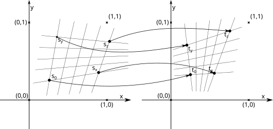

TOC
- Description
- Nomenclature
- Problem
- Existing Solutions
- ||h||=1
- h33 = 1
- Elements
- Translation
- Linear
- Simple Homography
- Building
- Elements
- Assembling
- Assembling
- Miscellaneous
- Source code
- Remarks
- Off topic
- Links
Description
In here it will be present method in step-by-step manner where every step has some geometric meaning.
Nomenclature
2D Euclid vector
-
Ordered pair of two real numbers.
p = ( x, y ) = [x,y] T; x,y ∈ ℝ 2D Homography point
-
Ordered triplet of three real numbers.
p = ( x, y, z ) = [x,y,z] T; x, y, z ∈ ℝ Homography
-
Definition: project (first) plane to (second) plane.
Matrix form Algebraic form h11 h12 h13 h21 h22 h22
h31 h32 h33 x' = x·h11 + x·h12 + h13
x·h31 + x·h32 + h33
y' = x·h21 + x·h22 + h23
x·h31 + x·h32 + h33
Problem
What we have:
-
- s0, sx, sy, sz ∈ ℝ2
- t0, tx, ty, tz ∈ ℝ2
- o=(0,0)
- area( si, sj, sk ) ≠ 0; i ≠ j ≠ k; i, j, k ∈ { 0, x, y, z }, this condition can be relaxed to only area( s0, sx, sy ) ≠ 0;
- area( ti, tj, tk ) ≠ 0; i ≠ j ≠ k; i, j, k ∈ { 0, x, y, z }
- Nice to have:
| area( ti, tj, tk ) | ≤ area( t0, tx, ty ); i, j, k ∈ { 0, x, y, z }
| area( si, sj, sk ) | ≤ area( s0, sx, sy ); i, j, k ∈ { 0, x, y, z }
What we want:
-
- H is homography.
- ti = H ( si ); i ∈ { 0, x, y, z }

Existing Solutions
- ||h||=1
-
For simplicity in here
x1 = s0x,
y1 = s0y,
...,
x'1 = t0x,
y'1 = t0y,
...
Ah=0 and ||h||= h112 + h122 + ... + h332 =1x1 y1 1 0 0 0 -x1 x'1 -y1 x'1 -x'1 0 0 0 x1 y1 1 -x1 y'1 -y1 y'1 -y'1 x2 y2 1 0 0 0 -x2 x'2 -y2 x'2 -x'2 0 0 0 x2 y2 1 -x2 y'2 -y2 y'2 -y'2 x3 y3 1 0 0 0 -x3 x'3 -y3 x'3 -x'3 0 0 0 x3 y3 1 -x3 y'3 -y3 y'3 -y'3 x4 y4 1 0 0 0 -x4 x'4 -y4 x'4 -x'4 0 0 0 x4 y4 1 -x4 y'4 -y4 y'4 -y'4 h11 h12 h13 h21 h22 h23 h31 h32 h33 = 0 0 0 0 0 0 0 0
...
ATA h = λ h
Eigenvector h with smallest eigenvalue λ of matrix ATA.
- h33 = 1
-
For simplicity in here
x1 = s0x,
y1 = s0y,
...,
x'1 = t0x,
y'1 = t0y,
...
And we have to solve :
Main disadvantaged here is that h33 can be near zero and possibly produce numerical instabilities.x1 y1 1 0 0 0 -x1 x'1 -y1 x'1 0 0 0 x1 y1 1 -x1 y'1 -y1 y'1 x2 y2 1 0 0 0 -x2 x'2 -y2 x'2 0 0 0 x2 y2 1 -x2 y'2 -y2 y'2 x3 y3 1 0 0 0 -x3 x'3 -y3 x'3 0 0 0 x3 y3 1 -x3 y'3 -y3 y'3 x4 y4 1 0 0 0 -x4 x'4 -y4 x'4 0 0 0 x4 y4 1 -x4 y'4 -y4 y'4 h11 h12 h13 h21 h22 h23 h31 h32 = x1 y1 x2 y2 x3 y3 y4 x4
Elements
Translation
-
Move for some vector.
(x+X,y+Y)=P(x,y)
Homography matrix:1 0 X 0 1 Y
0 0 1 Linear
-
If L is linear function then:
L( α · x + β · y ) = α · L( x ) + β · L( y )
Represented using homography matrix ( with one of many possible decompositions ):a11 a12 0 a12 a22 0
0 0 1 = cos( α ) -sin( α ) 0 sin( α ) cos( α ) 0
0 0 1 sx 0 0 0 sy 0
0 0 1 1 tan( β ) 0 0 1 0
0 0 1 α, sx, sy, β ∈ ℝ
Simple Homography
(0,0) = P(0,0);
(1,0) = P(1,0);
(0,1) = P(0,1);
(X,Y) = P(1,1);

Homography matrix: X 0 0 0 Y 0
1-Y 1-X X+Y-1 0 ≠ (1-Y)2 + ( 1-X )2 + ( X+Y-1 )2
Always ≠ 0.
Always exists.
... and vice versa
(0,0) = P(0,0);
(1,0) = P(1,0);
(0,1) = P(0,1);
(1,1) = P(X,Y);

Homography matrix: Y · (X + Y - 1) 0 0 0 X · (X + Y - 1) 0
Y·(Y - 1) X·(X - 1) X·Y 0 ≠ (Y·(Y - 1))2 + (X·(X - 1))2 + (X·Y)2
(X,Y) ≠ (0,0)
(X,Y) ≠ (1,0)
(X,Y) ≠ (0,1)
Building
-
Elements
-
Ts: translation matrix, translate from s0 to o=(0,0) 
Ts = 1 0 - s0x 0 1 - s0y
0 0 1 -() + - · 2 0 0 0 Ls: ( 0, 0 ) = Ls( ( 0, 0 ) ) ,
( 1, 0 ) = Ls( Ts ( sx ) ) ,
( 0, 1 ) = Ls( Ts ( sy ) )
ax = Ts ( sx )
ay = Ts ( sy )
Ls = ayy - ayx 0 -axy axx 0
0 0 axx · ayy - axy ·ayx -() + - · 0+2 0+0 4+1 0+2 Ps: (0,0) = Ps( (0,0) ),
(1,0) = Ps( (1,0) ),
(0,1) = Ps( (0,1) ),
(1,1) = Ps(Ls Ts( sz ) )
bz =Ls Ts( sz )
Ps = bz x 0 0 0 bz y 0
1-bz y 1-bz x bz x+bz y-1 -() + - · 0+0+0 0+2+1 2+0+3 0+4+0 Tt: translation matrix, translate from t0 to o 
Tt = 1 0 - t0x 0 1 - t0y
0 0 1 Tt-1 = 1 0 + t0x 0 1 + t0y
0 0 1 Tt-1 : -() + - · 0 0 0 0 Lt: ( 0, 0 ) = Lt( ( 0, 0 ) ),
( 1, 0 ) = Lt( Tt ( tx ) ),
( 0, 1 ) = Lt( Tt ( ty ) )
bx = Tt ( tx )
by = Tt ( ty )
Lt = byy - byx 0 -bxy bxx 0
0 0 bxx · byy - bxy ·byx Lt-1 = bxx byx 0 bxy byy 0
0 0 1 Lt-1 : -() + - · 0+0 0+0 4+0 0 Pt: (0,0) = Pt( (0,0) ),
(1,0) = Pt( (1,0) ),
(0,1) = Pt( (0,1) ),
(1,1) = Pt( Lt Tt( tz ) )
dz = Lt Tt ( tz )
X = dzx
Y = dzy
Pt = X 0 0 0 Y 0
1-Y 1-X X+Y-1 Pt-1 = Y · (X + Y - 1) 0 0 0 X · (X + Y - 1) 0
Y·(Y - 1) X·(X - 1) X·Y Pt-1 : -() + - · 0+0+0 0+2+2 2+0+4 0+4+5 -
Homographies, Assemble
- H = (Pt Lt Tt )-1 Ps Ls Ts = Tt-1 Lt-1 Pt-1 Ps Ls Ts
ƒ -() + - · Ts 2 0 0 0 Ls 0+2 0+0 4+1 0+2 Ps 0+0+0 0+2+1 2+0+3 0+4+0 Tt-1 0+0+0 0+0+0 0+0+0 0+0+0 Lt-1 0+0+0 0+0+0 0+4+0 0+0+0 Pt-1 0+0+0 0+2+2 2+0+4 0+4+5 H 5 · 0 5 · 4 5 · 0 5 · (4 · 2) ∑ 4 27 20 55 Miscellaneous
Source code
-
github.com/dmilos/math/linar/homography/construct2.hpp
Remarks
-
- This can be easily extend to higher dimensions
- With appropriate effort it can be make in close form.
Off topic
-
Homography matrix can be multiplied by some non zero factor for better utilization.
Here are several proposed values to do that:- λ = 1/h33
- This is one of the most common way to do.
- λ= s/||h*1||, s ∈ ℝ s ≠ 0;
- Observe first column as 3D vector. s i usually equal to 1. First column can be seen as first basis vector of first plane.
- λ= 1/||h*1 ⨯ h*2||
- h*1 ⨯ h*2 is normal of source plane.
- v = h*1 ⨯ h*2;
λ = 1/|| vx·vx + vy·vy|| -
This cross product also give equation of horizon or vanish line on target plane( z=1 ).
First and second coordinate will present direction of line in form: x·cos( α ) + y·sin( α ) - r = 0
Links
-
- https://en.wikipedia.org/wiki/Homography